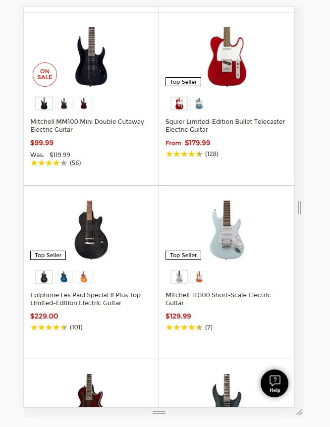

PARC: Repetition
Guitar Center

The consistency of how products are displayed shows how repititon makes it easy to follow the
content on a webpage. Everything that you need to see and know such as price, ratings, sales, top seller, descriptions,
and color variants are all in the same location per product. It is easy to find base information per model.
White Space and Clean Design
BYU-Idaho
There is good, adequate white space between images and sections on the mobile site to make the
content not feel too cluttered. You can see the clear divisions between important sections and since there are a
variety of colors and images used as backgrounds, having white space helps avoid and clashing between those elements.
Fitt's Law
Dominoes

Every action button such as Carryout, Delivery, etc. are larger and more obvious and accessible. Another example of
easy accessibility is the use of the cart icon. A site with actions such as ordering, viewing menus or services, and
shopping should have emphasis on where to do these things as we see here with icons and red buttons against the white
space.